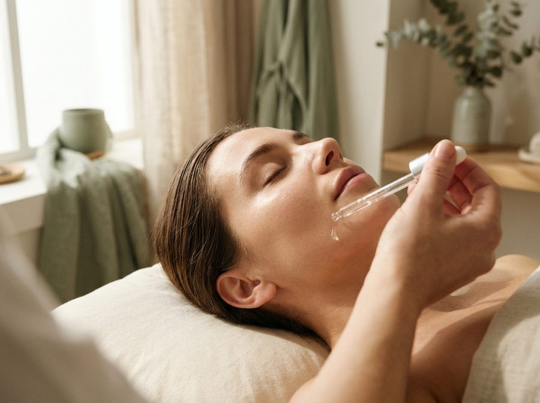
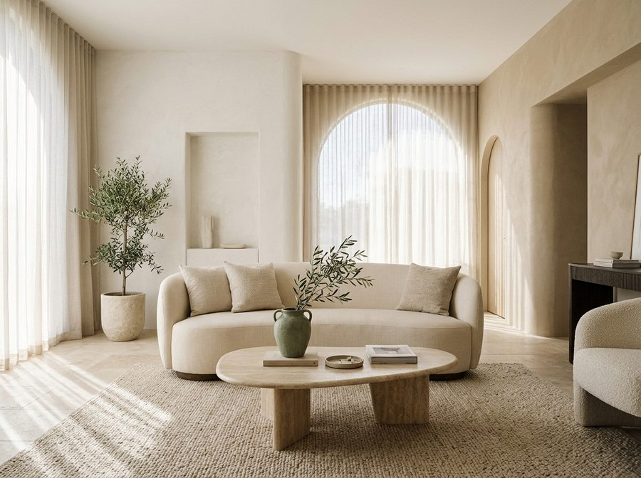
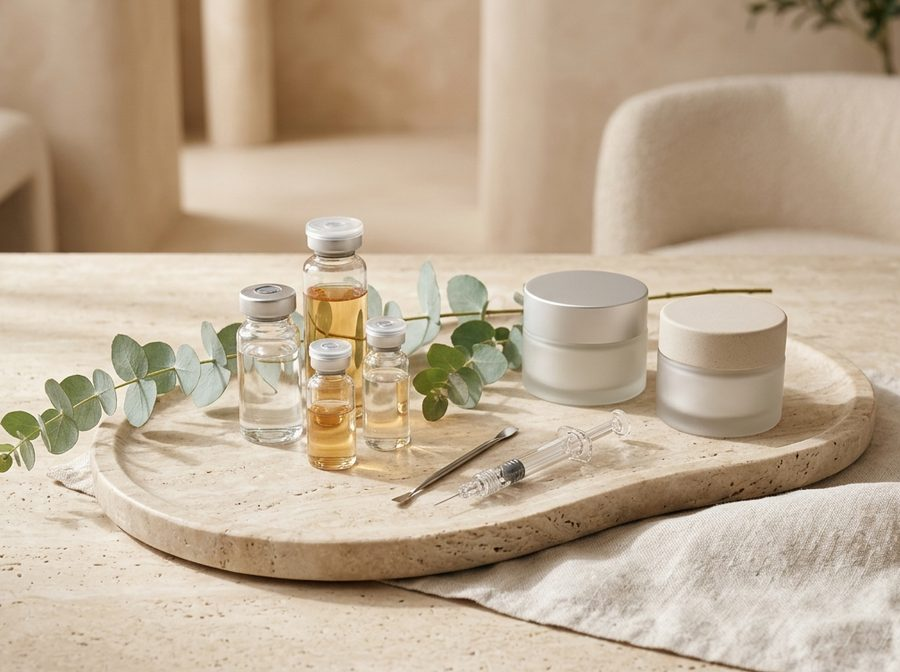

✦
استانداردهای بهداشتی دقیق
استریلیزاسیون کامل اتاقهای درمان و استفاده از پکهای یکبارمصرف اختصاصی.
در کلینیک زیبایی لومیر، مراقبتهای تخصصی پوست، لیزر و جوانسازی غیرتهاجمی را در فضایی مینیمال، روشن و مبتنی بر استانداردهای روز تجربه کنید.

بررسی علمی نیاز پوست و تدوین برنامه مراقبت اختصاصی متناسب با هر فرد
استریلیزاسیون کامل اتاقهای درمان و استفاده از پکهای یکبارمصرف اختصاصی.
حفظ اصالت چهره و پرهیز از تغییرات اغراقآمیز در تمامی پروتکلها.
بهرهگیری از دستگاههای استاندارد نوردرمانی، آبرسانی و آنالیز پوست.
ارائه راهنمای دقیق مراقبت در منزل و پایش روند بهبودی پس از جلسات.
برنامههای مراقبتی و درمانی کلینیک لومیر با تکیه بر روشهای ایمن، غیرتهاجمی و شخصیسازیشده ارائه میشوند.

پاکسازی چندمرحلهای، لایهبرداری ملایم و سرمتراپی آنتیاکسیدان برای بازگرداندن شفافیت پوست.

فناوریهای غیرتهاجمی نوری برای یکنواختسازی رنگ پوست و تحریک کلاژنسازی.

رویکردی محافظهکارانه و طبیعی برای حفظ تناسبات چهره و شادابی پوست.

پاکسازی اسکالپ، اکسیژنرسانی و تغذیه ریشه مو برای افزایش استحکام تارهای مو.

بهبود قوام پوست و افزایش انعطافپذیری بافت با روشهای غیرجراحی.

سنجش میزان رطوبت، چربی و حساسیت پوست برای تدوین برنامه مراقبت روزانه.

کلینیک لومیر با هدف بازتعریف تجربه مراجعه به مراکز زیبایی طراحی شده است؛ جایی که نور طبیعی، حریم خصوصی و گفتوگوی صادقانه در اولویت قرار دارد.
همراهی پزشکان مجرب و مشاوران تخصصی پوست و مو در تمامی مراحل ارزیابی، درمان و مراقبتهای پس از جلسه.
تمرکز بر پروتکلهای جوانسازی غیرتهاجمی، اصلاح بافت پوست و برنامهریزی مراقبتهای بلندمدت.
متخصص فناوریهای نوری، لیزرهای کمتهاجمی و حفظ تناسبات طبیعی و اصیل چهره.
تمرکز بر آنالیز دیجیتال پوست سر، تقویت فولیکول و طراحی روتینهای درمانی پوست حساس.
برای مشاهده تصویر در ابعاد بزرگتر روی هر کارت کلیک کنید.
بازخورد مراجعین درباره آرامش محیط، دقت مشاوره و کیفیت خدمات مراقبتی کلینیک.
«فضای آرام و نورگیر کلینیک از همان لحظه ورود حس اعتماد و آرامش ایجاد میکند. مشاوره اولیه بسیار دقیق و بدون عجله انجام شد.»
«توضیح شفاف مراحل کار و پیشنهاد روتین ساده خانگی باعث شد دقیقاً بدانم چه مراقبتی برای پوستم مناسب است.»
«رعایت بهداشت، نظم زمانبندی جلسات و برخورد محترمانه تیم مشاوره تجربهای کاملاً حرفهای رقم زد.»
خدمت موردنظر و تاریخ پیشنهادی خود را ثبت کنید تا کارشناسان پذیرش کلینیک لومیر جهت هماهنگی نهایی با شما تماس بگیرند.